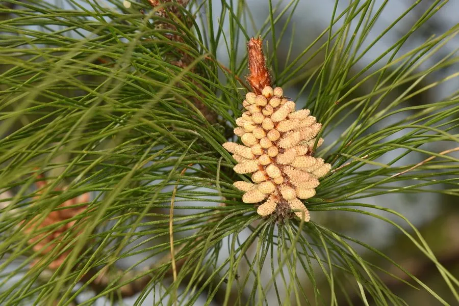

乔木 · 植物界
马尾松 Pinus massoniana

中国南方分布最广的松树之一，针叶细软如马尾，耐瘠薄、生长快，是荒山绿化与用材林的主要树种。
- 分类
- 门裸子植物门纲松柏纲目松柏目科松科属松属
- 栖息环境
- 海拔 1000 米以下的丘陵、山地与酸性红壤区，耐干旱瘠薄
- 地理分布
- 中国长江流域以南及华南、西南丘陵山地，以江西、湖南、福建等地最多
- 保护级别
- 暂无评估；中国未列入国家重点保护野生植物名录
物种志
马尾松为常绿针叶乔木，高可达 45 m，胸径可达 1.5 m，树皮红褐色、呈不规则鳞状开裂；针叶 2 针一束，细长柔软，长 12–20 cm，在枝端丛生如马尾，故得名。雌雄同株，雄球花黄色、聚生于新枝下部，雌球花紫色、生于枝顶；球果卵圆形，长 4–7 cm，成熟时栗褐色，鳞片张开散出带翅种子。
马尾松分布于中国长江流域以南及华南、西南的丘陵山地，是南方分布最广、蓄积量最大的松树，喜光、耐干旱瘠薄，适应酸性红壤与石砾土，是荒山造林的先锋树种。木材可供建筑、矿柱与造纸，松脂可提炼松香和松节油，是中国重要的林业资源；松针可提精油，松花粉可入药。马尾松林也是多种鸟兽的栖息地，但松材线虫病对其构成严重威胁。
形态与习性
- 株高可达 45 m，胸径可达 1.5 m
- 花期3–4 月，雄球花黄色
- 球果成熟翌年 10–11 月，种子具翅
- 光照强阳性，不耐庇荫
- 水分耐旱，年降水量 800 mm 以上生长良好
- 土壤酸性红壤、黄壤，耐瘠薄
- 主要用途建筑与矿柱用材、采脂提炼松香、荒山造林
趣味知识
- 马尾松的针叶两针一束、细长柔软，丛生枝端像马尾，因此得名。
- 马尾松是中国采脂的主要树种，一棵成年树每年可产松脂数公斤。
- 松材线虫由天牛传播，是马尾松林最致命的病害，被称为“松树癌症”。
- 马尾松球果成熟后鳞片张开，带翅的种子可随风飘出数十米。